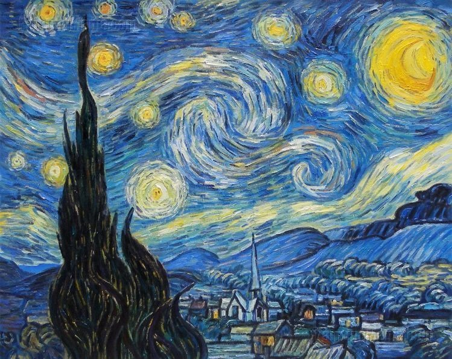
La Nuit étoilée
Peinte en 1889, cette œuvre est l’une des plus célèbres de Van Gogh.
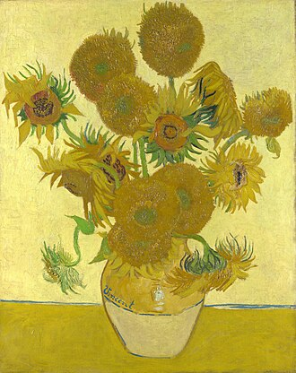
Les Tournesols
Série de peintures réalisées entre 1888 et 1889 à Arles.
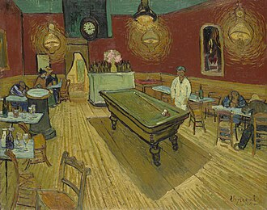
Le Café de nuit
Tableau vibrant peint en 1888, représentant un café d’Arles.
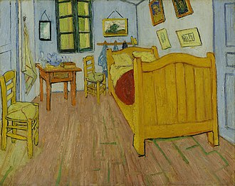
La Chambre de Van Gogh à Arles
Peinte en 1888–1889, Van Gogh représente sa chambre de la Maison Jaune à Arles, sujet décliné en trois versions.
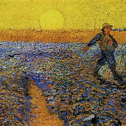
Le Semeur
Motif inspiré de Millet, traité à Arles en 1888, exaltant la lumière du couchant et la figure du paysan au
travail.
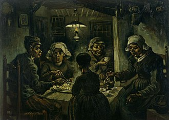
Les Mangeurs de pommes de terre
Réalisé à Nuenen en 1885, scène sombre de paysans partageant un repas, œuvre clé des débuts de Van Gogh.
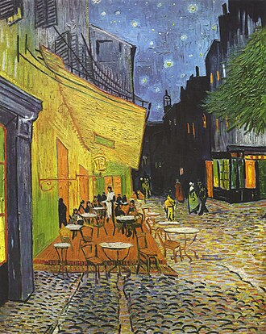
Terrasse du café le soir
Septembre 1888, Arles. Première grande scène nocturne, un café illuminé sous un ciel étoilé vibrant.
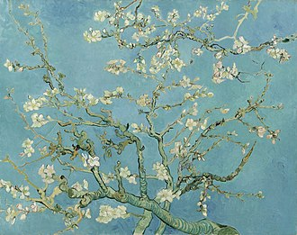
Branche d'amandiers en fleurs
Peinte en 1890 à Saint‑Rémy, symbole de renouveau dédié à la naissance de son neveu, influencé par les estampes
japonaises.
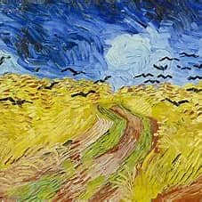
Champs de blé aux corbeaux
Juillet 1890, Auvers‑sur‑Oise. Paysage dramatique au ciel tourmenté et corbeaux, souvent associé à ses derniers
mois.
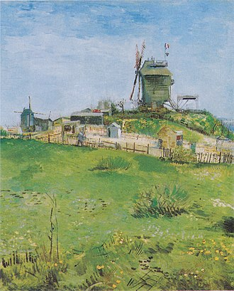
Le Moulin de la Galette
Vue de Montmartre, Paris 1886. Série consacrée aux moulins et à la vie populaire sur la butte.
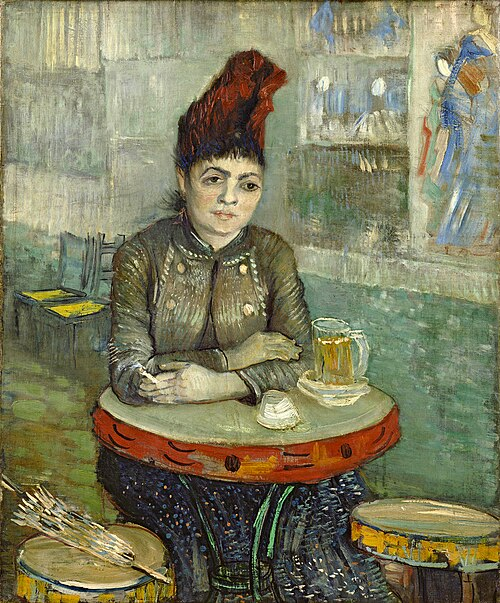
Agostina Segatori au café du Tambourin
Portrait réalisé en 1887 à Paris de l’ancienne modèle et patronne du café où il exposa des estampes japonaises.
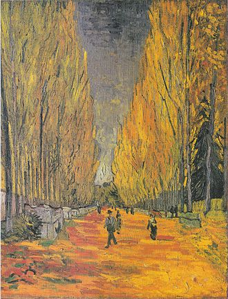
Les Alyscamps
Octobre 1888, Arles. Allée automnale d’une nécropole antique, peinte pendant la cohabitation avec Gauguin.
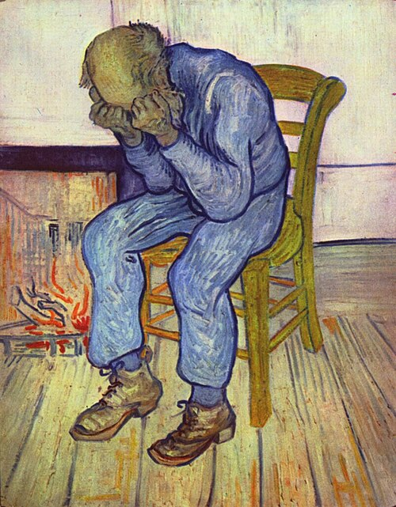
À la porte de l'éternité
Mai 1890, Saint‑Rémy. Vieil homme accablé, reprise d’un motif antérieur, empreinte d’intense émotion.
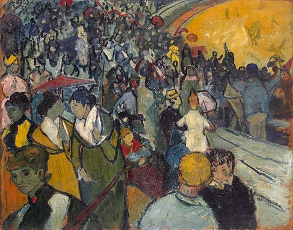
Les Arènes d'Arles
1888, Arles. Scène de spectateurs lors d’une corrida locale, avec portraits de proches et amis.
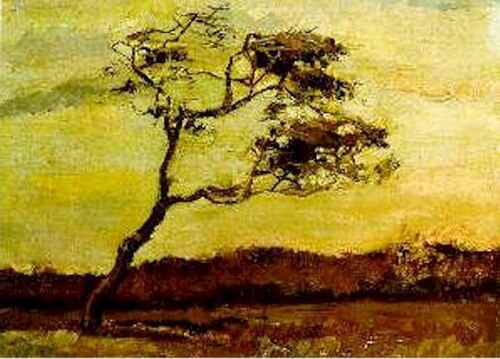
Arbre fouetté par le vent
1883, La Haye. Petit paysage au réalisme nerveux capturant la vigueur du vent sur un arbre isolé.
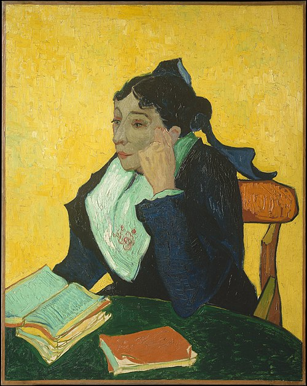
L'Arlésienne (Van Gogh, 1888)
Portrait de Madame Ginoux à Arles, figure récurrente peinte en plusieurs versions aux couleurs vives.
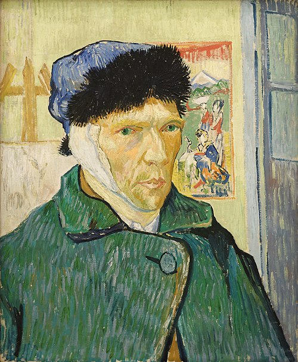
Autoportrait à l'oreille bandée
Janvier 1889, Arles. Van Gogh se représente après l’épisode de l’oreille, devant un chevalet et une estampe
japonaise.
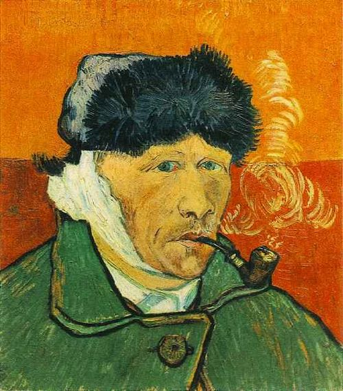
Autoportrait à l'oreille bandée
Janvier 1889, Arles. Variante avec pipe, atmosphère plus intime, réalisée peu après la convalescence.
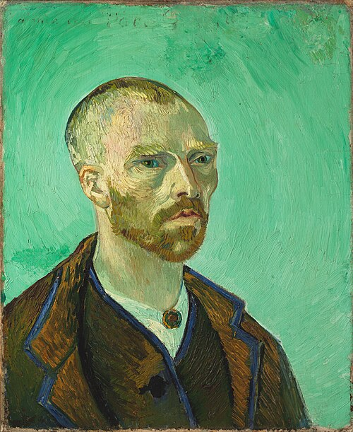
Autoportrait dédié à Paul Gauguin
Septembre 1888, Arles. Portrait “bonze” aux tons verts, offert symboliquement à Gauguin avant sa venue.
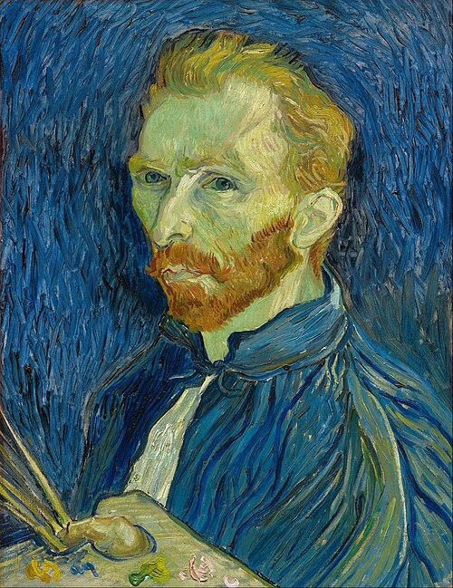
Autoportrait avec palette
1889, Saint‑Rémy. L’artiste se montre en peintre moderne, palette à la main, palette chromatique complémentaire.
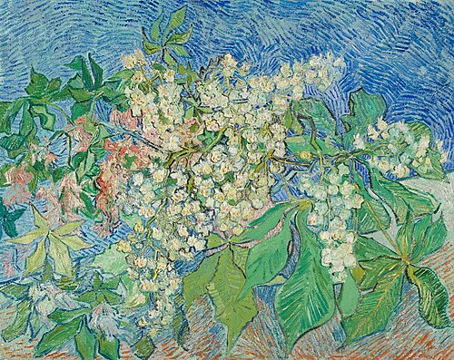
Branches de marronnier en fleur
Mai 1890, Auvers‑sur‑Oise. Floraison printanière peinte dans sa dernière période, palette lumineuse et vive.
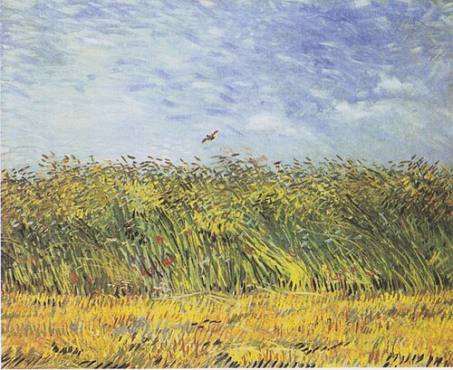
Champ de blé à l'alouette
1887, Paris. Champ foisonnant de fleurs, une alouette s’élève, annonçant son langage de touches rapides.
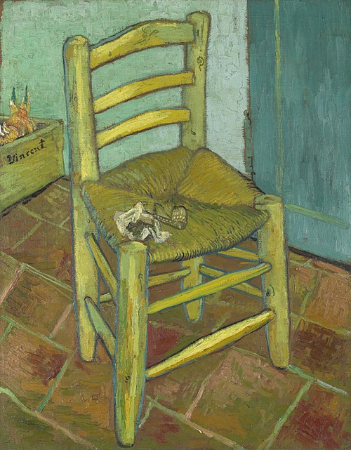
La Chaise de Vincent avec sa pipe
1888, Arles. Nature morte symbolique en pendant au fauteuil de Gauguin, lumière diurne et tons jaunes.
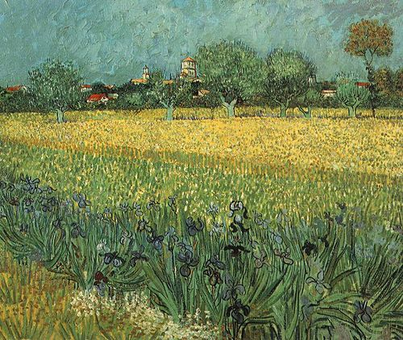
Le Champ de blé aux iris
Mai 1888, Arles. Prairie jaune aux iris violets, avec la ville au loin, contrastes inspirés du Japonisme.
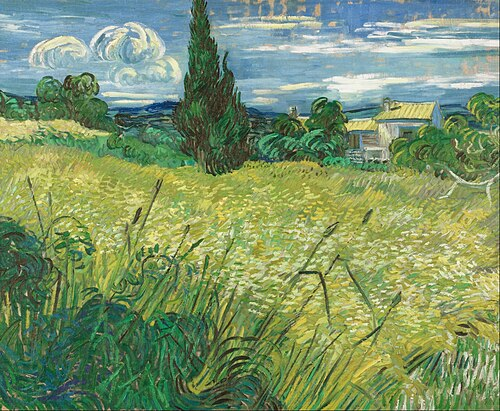
Le Champ de blé vert avec cyprès
Juin 1889, Saint‑Rémy. Paysage aux cyprès et au blé verdoyant, ciel animé de mouvements tourbillonnants.
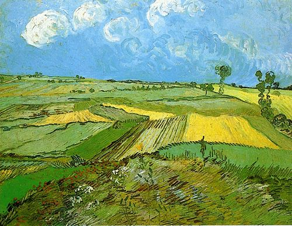
Champs de blé après la pluie
1890, Auvers. Horizons élevés et champs en perspective zigzagante après l’averse, atmosphère apaisée.
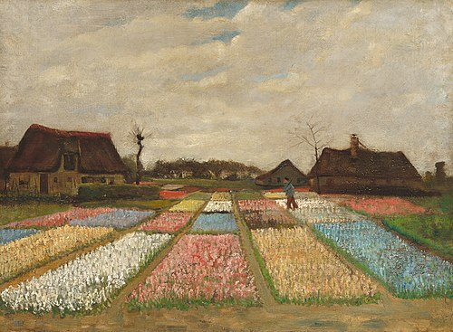
Champs de fleurs en Hollande
Vers 1883, La Haye. Rangées colorées de tulipes et parterres fleuris, palette encore réaliste et sobre.
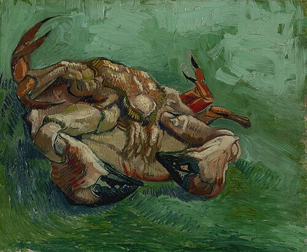
Crabe, couché sur le dos
1887, Paris. Nature morte concise d’un crabe retourné, influence des estampes japonaises sur le cadrage.
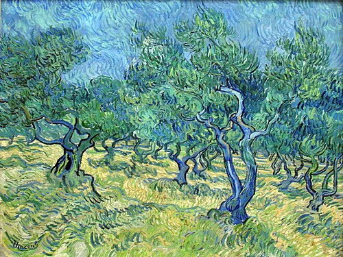
Champ d'oliviers
1889, Saint‑Rémy. Série d’oliveraies aux troncs noueux, lumière provençale et spiritualité du motif.
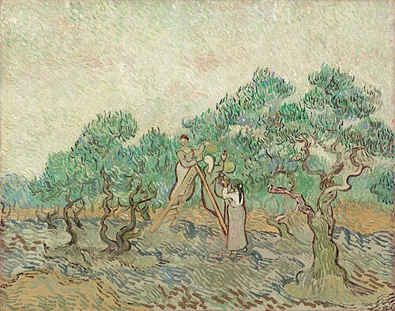
La Cueillette des olives
Fin 1889, Saint‑Rémy. Plusieurs versions de femmes récoltant les olives, stylisation et gamme discrète.
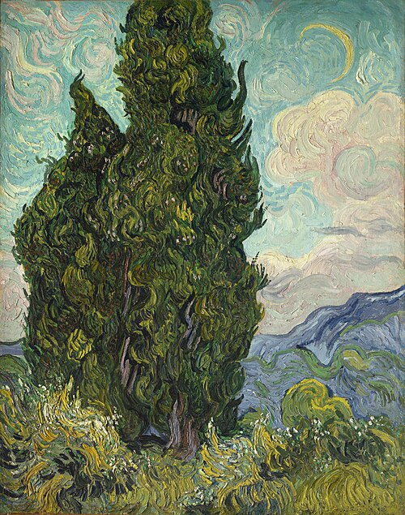
Les Cyprès
1889, Saint‑Rémy. Arbres sombres dressés comme des obélisques, traités en série, symbole fort chez Van Gogh.
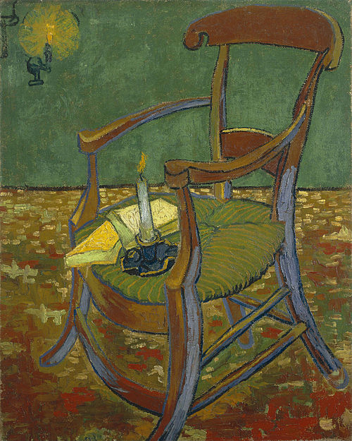
Le Fauteuil de Paul Gauguin
Novembre 1888, Arles. Pendant de la chaise de Vincent, nocturne rouge‑vert, bougie et romans sur l’assise.
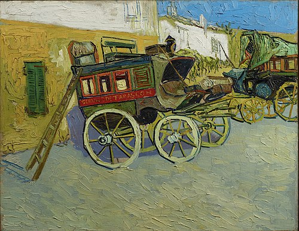
La Diligence de Tarascon
Octobre 1888, Arles. Voiture dans la cour d’une auberge, clin d’œil littéraire à Daudet et Tartarin.

Iris
Mai 1889, Saint‑Rémy. Étude de couleur où les iris violets contrastent avec des fonds jaunes et verts.
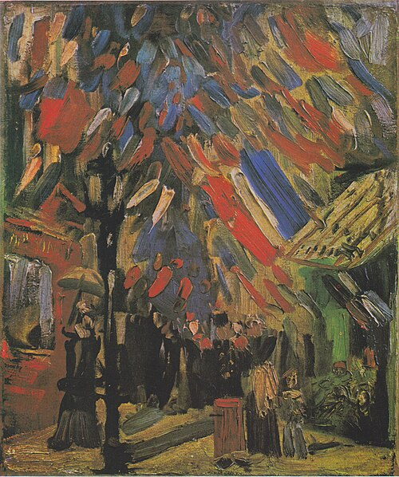
La Fête du 14 juillet à Paris
1886, Paris. Rue pavoisée et foule en mouvement, témoignage de son immersion dans la vie parisienne.
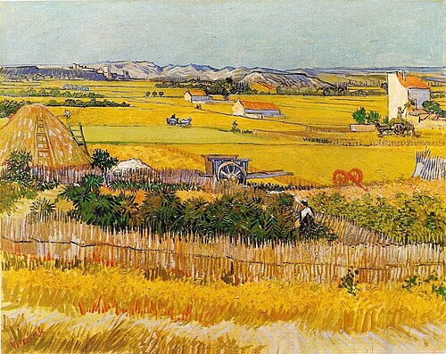
La moisson
1888, Arles. Champs découpés, faucheurs à l’ouvrage, composition horizontale d’une Provence lumineuse.
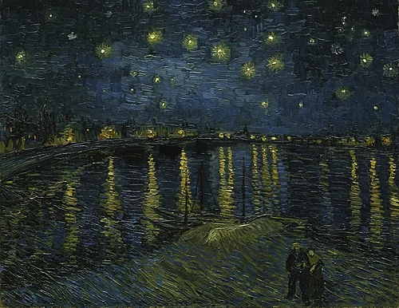
Nuit étoilée sur le Rhône
Septembre 1888, Arles. Reflets des lumières de la ville sur le fleuve, ciel nocturne constellé.
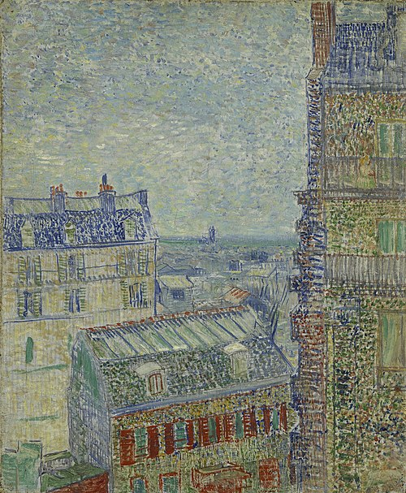
Vue des toits de Paris
1886–1887, Paris. Panorama depuis Montmartre, cheminées et monuments à l’horizon, perspective profonde.
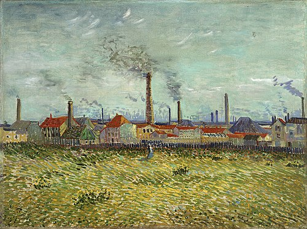
Usines à Asnières
Été 1887, région parisienne. Cheminées fumantes et bords de Seine, regard sur l’industrialisation.
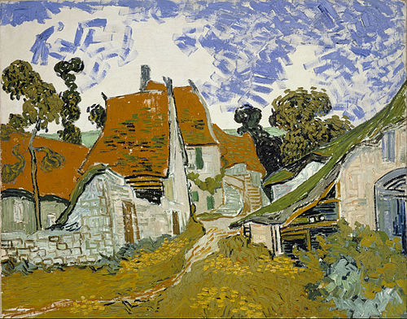
Rue d'Auvers
Mai 1890, Auvers‑sur‑Oise. Maisons et rues du village de ses dernières semaines, palette vive et dense.
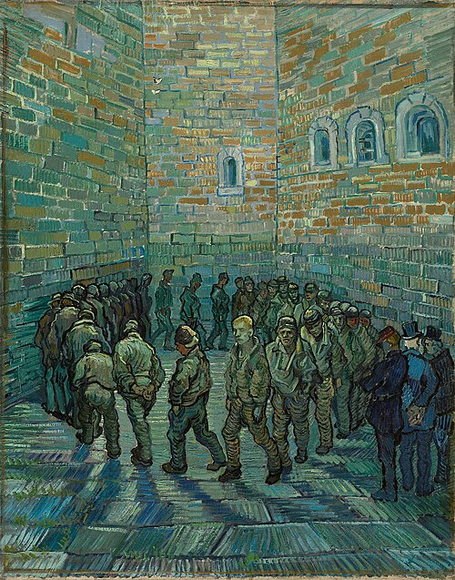
La Ronde des prisonniers
Février 1890, Saint‑Rémy. Prisonniers tournant en cour, réinterprétation d’un motif de Doré, écho de
l’enfermement.
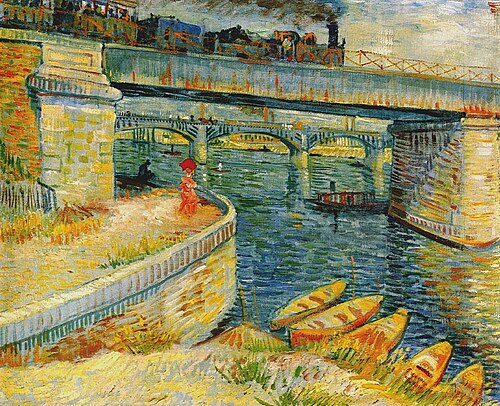
Les Ponts d'Asnières
Peinte en 1887 à Asnières-sur-Seine, cette toile montre les ponts franchissant la Seine.